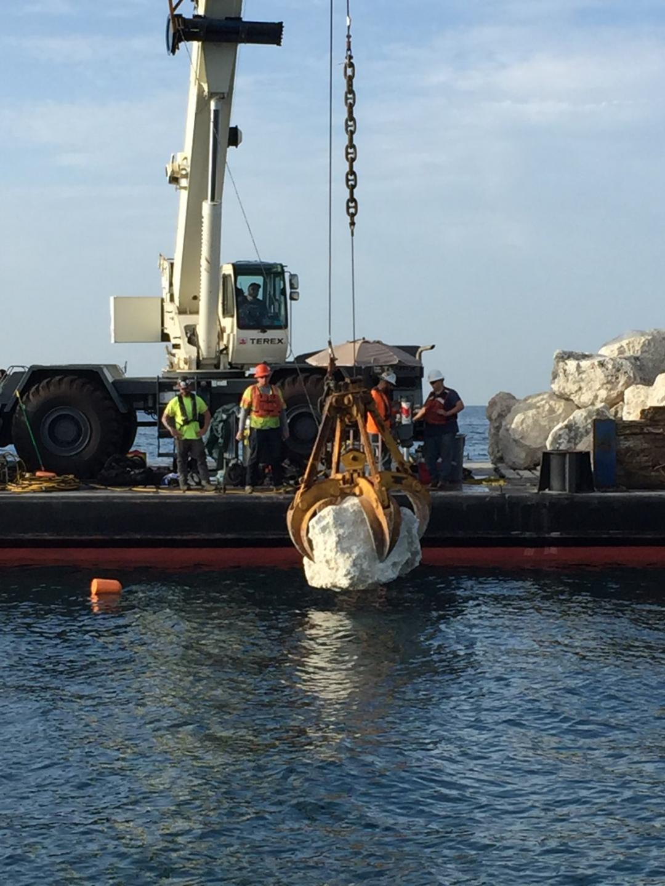
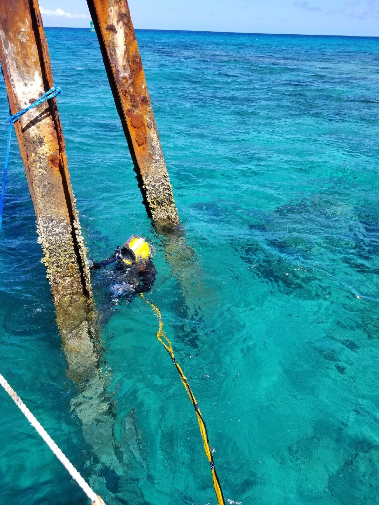

Construction Services
-

IDC provides diving services to many of the Florida Power & Light Plants. These services include; de-mineralized water tank diving, replacement and cleaning of security nets around discharge, repair and replacement of traveling water screens from top to bottom, Inspection and cleaning of intake wells, photographic and video documentation, reinforce cross beam piling by forming and pumping with concrete, diving in hot water discharge, stop log installation and sealingm, new plant construction, and intake and discharge tunnel inspection.
-

IDC performs multiple cofferdam projects every year. Cofferdam preparation has become an IDC specialty. IDC assists our customers in inspection and cleaning of coffer dam walls and auger piles for grout adhering. Dredging and de-mucking of excess silt and mud off cofferdam bottom in preparation for grouting. Chipping and removing of rock that cannot be reached by conventional digging methods. Checking and setting rock anchors to proper elevations. Finally, repairing leaks after grouting.
-
IDC has been and continues to be involved in cable installation project for civilian projects going back 25 years. IDC has been continuously providing for all aspects of submarine cable installation, shore endings, and sensor ranges for the United States Naval Research Community.